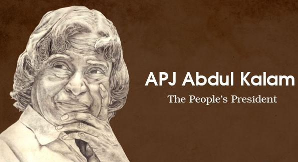
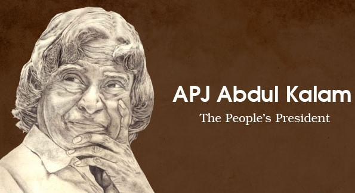

Achievement of Dr APJ Abdul Kalam
MISSILE MAN OF INDIA
- Dr APJ Abdul Kalam’s Contribution to Missile Project
- Under his command, he had a team of India’s best soldiers.
- He simultaneously served as Prime Minister’s Chief Scientific Adviser from July 1992 to December 1999, and also the Secretary of the Defence Research and Development Organisation (DRDO).
- In 1998, Kalam and Dr Soma Raju collaborated to design a low-cost coronary stent. The stent was dubbed the “Kalam-Raju Stent.” For rural health care, the “Kalam-Raju Tablet” was created in 2012.
- The Pokhran-II nuclear tests in 1998 proved India’s nuclear capabilities. Without Dr Kalam’s assistance, this project would not have been possible. Such weapons, he explained to the international community, would serve solely as “weapons of peace” to discourage other countries from the annexation of Indian territory.
- As the leader of India’s missile programme in the 1980s, political parties came together in 2002 to elect APJ Abdul Kalam as the country’s eleventh president.
THE FORMAR PRESIDENT OF INDIA
- A Well-Known Figure Around the World
- APJ Abdul Kalam, the former president of India, continues to be an inspiration to many people of all ages and from all backgrounds. His commitment to science and technology and his service to the country earned him the title "Missile Man of the country."
- Some of the best speeches ever delivered at the United Nations and European Union can be found in his fervent speeches.
- Dr Kalam was appointed as a guest lecturer at the University of Delhi, after completion of his term as President
- As lecturer, he wrote extensively and supported a number of youth development initiatives.
- India as a mighty force is depicted in his works of fiction: Wings of Fire and India 2020. Throughout his life, he worked tirelessly to make the world a better place through his writings, lectures and other endeavours.
 
